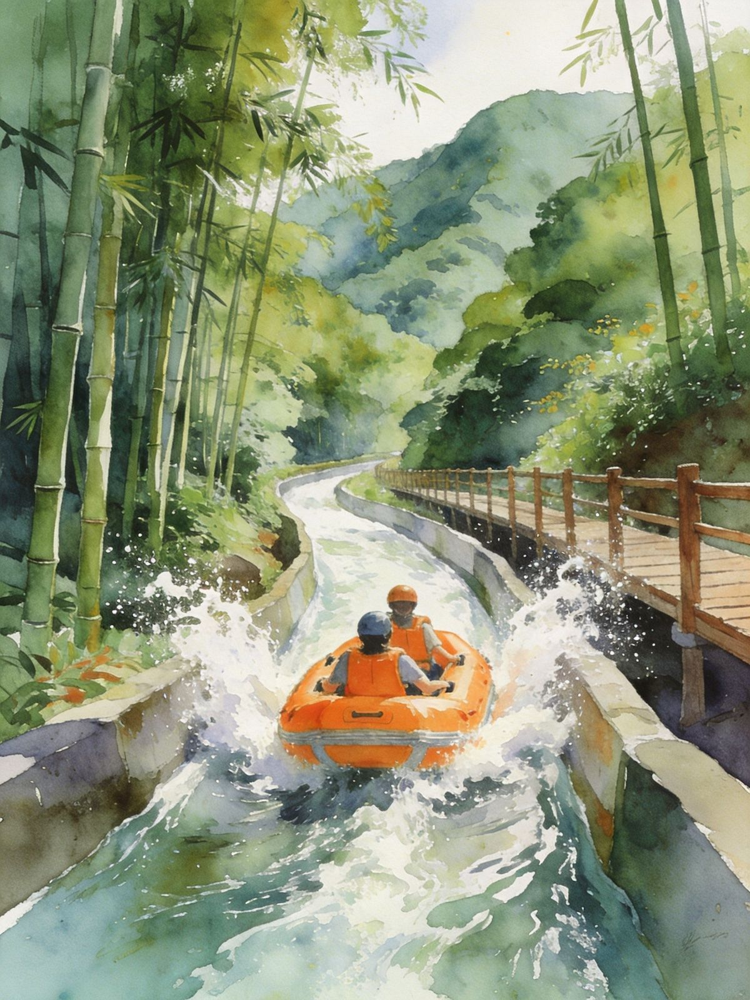
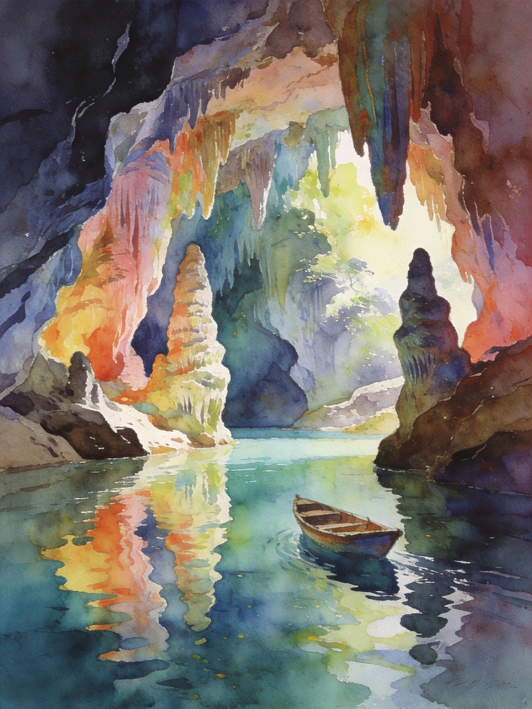

广州人的"后花园"：古龙峡/黄腾峡来一场峡谷漂流，清远长隆森林王国看非洲象群，连州地下河探溶洞奇观，英德茶园品一杯好茶——山高林密、水清峡险，是广东最会"玩水玩山"的地方。
漂流胜地 森林度假 · 亲子友好清远位于广东北部、珠三角后门，森林覆盖率高、峡谷溪流纵横，是**广东最负盛名的漂流与森林度假地**。古龙峡、黄腾峡等峡谷落差大、水质清澈，夏天漂流火爆；近年清远长隆森林王国开园，非洲象群、自驾廊道等亲子项目大热。
看什么：古龙峡/黄腾峡漂流、清远长隆森林王国、连州地下河溶洞、英德红茶茶园、阳山/连南千年瑶寨等。
适合人群：漂流爱好者、亲子家庭（长隆）、自驾一族、暑期玩水与茶园休闲客。


看非洲象群/黑犀牛，27km自驾廊道，亲子热门。
英德绿茶园观光，品茗休闲。
粤北瑶寨人文，千年古寨依山而建。
景古龙峡漂流+峡谷瀑布 → 夜宿清远市区/温泉
景清远长隆森林王国（亲子）或英德茶园 → 返程
景古龙峡/黄腾峡漂流 → 夜宿温泉区
景清远长隆看非洲象/自驾廊道，亲子一整天
景连州地下河溶洞（较远）或英德茶园采茶 → 返程
自驾：广州/佛山出发约1-1.5小时（广清高速/乐广高速），漂流与长隆多在市区周边，自驾最方便。
高铁：广州北站/广州南有高铁到清远站（约30-40分钟），出站打车/公交前往景区。
连州较远：在清远西北约150公里，去连州地下河建议单独安排一天并自驾/包车。
漂流区：古龙峡、黄腾峡在清远市区周边，自驾/打车可达，漂流旺季需停车位早到。
长隆森林王国：有自驾廊道，自驾体验佳。
节奏提示：漂流+长隆+溶洞距离较散，按兴趣择二，别贪多赶路。
大名鼎鼎的清远鸡，白切/豉油，皮爽肉滑。
竹笋、山野菜、腊味，山区食材地道。
英德红茶清甜；瑶乡糍粑糯香。